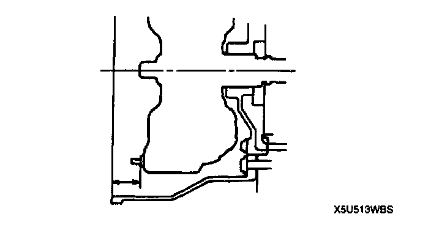

Torque Converter: Service and Repair
TORQUE CONVERTER REMOVAL/INSTALLATION1. Remove the transmission.
Caution: The oil seal is easily damaged by the sharp edges of the torque converter splines. Do not let the splines contact the oil seal.
2. Remove the torque converter, and immediately turn it so that the hole faces upward. This will help to keep any remaining fluid from spilling.
3. Drain any ATF remaining in the torque converter.
4. Pour in solvent (approx. 0.50 L (0.53 Us qt. 0.44 Imp qt.)).
5. Shake the torque converter to clean the inside. Pour out the solvent.
6. Install the torque converter in the converter housing while rotating it to align the splines.

7. To ensure that the torque converter is installed accurately, measure distance A between the end of the torque converter and the end of the converter housing.
Distance A 22.7 mm (0.894 inch)
8. Install the transmission.